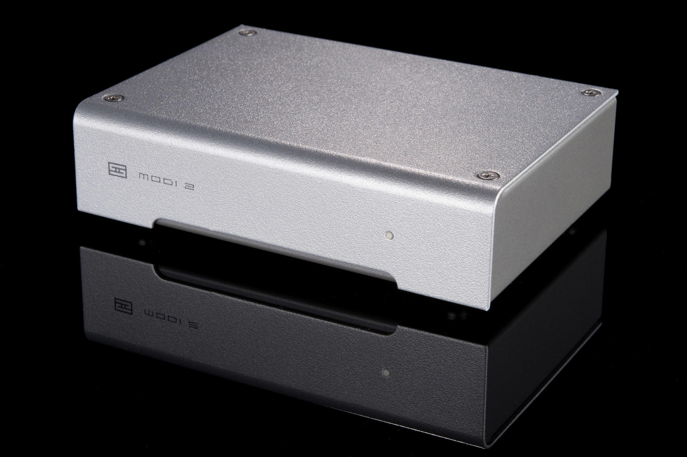

Modi 2 (Standard & Uber)
Released: 2014/12/12
Category: DACs
Modi is a complete family of affordable DACs for virtually any need. Whether you want better sound from your computer, from your Apple TV, from your CD player, or virtually any source, the Modi family has a model that will fit your needs perfectly.
Modi 2: Improve Any Computer’s Sound
Modi 2 plugs into virtually any computer—Windows, Mac, popular Linux distros, Intel Chromebooks, as well as iPhones and iPads. Just plug in via USB and go with no drivers in Standard Mode, up to 24/96 output. Switch to Expert Mode for extended high-res capabilities to 24/192. This will require drivers for Windows, but for no other OS (hello, Microsoft!)
Modi 2 Uber: The Complete Mini-DAC
Honey, I shrunk the Bifrost! That’s the idea behind Modi 2 Uber. Like Bifrost, Modi 2 Uber offers USB, Toslink, and RCA inputs, each individually selectable via a front-panel button. It also has a more sophisticated analog section. And, it’s ready for all sample rates, from 16/44.1 to 24/192. Again, Windows requires drivers. Alert to Microsoft: USB Audio Class 2 was, like, a decade ago. Please support it and stop requiring us to provide drivers. Seriously, Android phones support it.